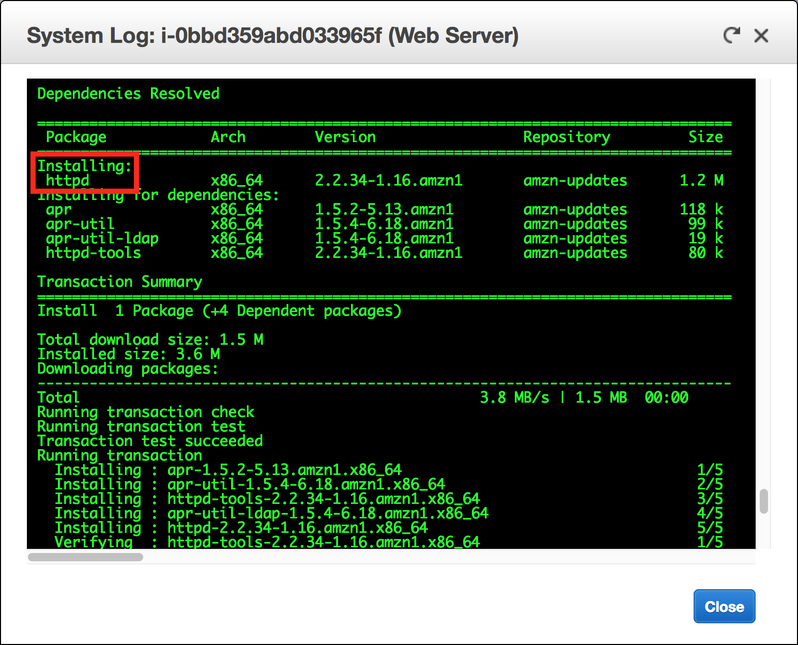

실습 3: Amazon EC2 소개
버전 1.1.7(spl200)
개요

이 실습에서는 Amazon EC2 인스턴스의 시작, 크기 조정, 관리 및 모니터링에 대한 기본 개요를 제공합니다.
Amazon Elastic Compute Cloud(Amazon EC2)는 클라우드에서 크기 조정 가능한 컴퓨팅 파워를 제공하는 웹 서비스입니다. 이 서비스는 개발자가 보다 쉽게 웹 규모의 클라우드 컴퓨팅을 수행할 수 있도록 설계되었습니다.
Amazon EC2의 간단한 웹 서비스 인터페이스를 통해 간편하게 필요한 용량을 얻고 구성할 수 있습니다. 컴퓨팅 리소스를 완전히 제어하고 Amazon의 입증된 컴퓨팅 환경에서 실행할 수 있습니다. Amazon EC2에서는 몇 분이면 새로운 서버 인스턴스를 확보하고 시작할 수 있으므로, 컴퓨팅 요구 사항의 변경에 따라 컴퓨팅 파워를 신속하게 확장 및 축소할 수 있습니다.
Amazon EC2를 사용하면 실제 사용한 만큼만 요금을 지불하면 되므로, 컴퓨팅 비용이 절약됩니다. Amazon EC2는 장애에 대한 복원력이 뛰어난 애플리케이션을 구축하고 일반적인 장애 시나리오에서 애플리케이션을 격리하는 데 도움이 되는 개발자용 도구를 제공합니다.
이 실습에서 다루는 주제
이 실습을 마치면 다음을 수행할 수 있습니다.
- 종료 방지 기능이 활성화된 웹 서버 시작
- EC2 인스턴스 모니터링
- 웹 서버에서 HTTP 액세스를 허용할 때 사용하는 보안 그룹 수정
- 규모에 맞게 Amazon EC2 인스턴스 크기 조정
- EC2 제한 탐색
- 종료 방지 테스트
- EC2 인스턴스 종료
소요 시간
이 실습은 완료까지 약 35분이 소요됩니다.
AWS Management Console 액세스
지침의 맨 위에서 Start Lab을 클릭하여 실습을 시작합니다.
Start Lab 패널이 열리고 실습 상태가 표시됩니다.
“Lab status: ready” 메시지가 표시되면 X를 클릭하여 Start Lab 패널을 닫습니다.
지침의 맨 위에서 AWS를 클릭합니다.
그러면 새 브라우저 탭에서 AWS Management Console이 열립니다. 시스템에서 자동으로 로그인합니다.
팁: 새 브라우저 탭이 열리지 않는 경우 일반적으로 브라우저에서 팝업 창을 열 수 없음을 나타내는 배너 또는 아이콘이 브라우저 상단에 표시됩니다. 배너 또는 아이콘을 클릭하고 Allow pop ups를 선택합니다.
이러한 지침이 나란히 표시되도록 AWS Management Console 탭을 정렬합니다. 두 브라우저 탭이 동시에 표시되어 실습 단계를 보다 쉽게 수행할 수 있게 됩니다.
과제 1: Amazon EC2 인스턴스 시작
이 과제에서는 종료 방지 기능을 갖춘 Amazon EC2 인스턴스를 시작합니다. 종료 방지 기능은 EC2 인스턴스가 실수로 종료되는 것을 방지합니다. 이 과제에서는 간단한 웹 서버를 배포할 수 있는 사용자 데이터 스크립트를 사용하여 인스턴스를 배포합니다.
- AWS Management Console의 Services 메뉴에서 EC2를 클릭합니다.
- Launch Instance을 선택한 다음 Launch Instance을 선택합니다.
1단계: Amazon Machine Image(AMI) 선택
Amazon Machine Image(AMI)는 클라우드의 가상 서버인 인스턴스를 시작하는 데 필요한 정보를 제공합니다. AMI에는 다음 항목이 포함됩니다.
- 인스턴스 루트 볼륨에 대한 템플릿(예: 운영 체제 또는 애플리케이션이 있는 애플리케이션 서버)
- AMI를 사용하여 인스턴스를 시작할 수 있는 AWS 계정을 제어하는 시작 권한
- 시작 시 인스턴스에 연결할 볼륨을 지정하는 블록 디바이스 매핑
Quick Start 목록에는 가장 자주 사용되는 AMI가 포함됩니다. 자체 AMI를 생성하거나 AWS에서 실행되는 소프트웨어를 판매 또는 구매할 수 있는 온라인 스토어인 AWS Marketplace에서 AMI를 선택할 수도 있습니다.
- 목록 맨 위에 있는 Amazon Linux 2 AMI 옆의 Select를 선택합니다.
2단계: 인스턴스 유형 선택
Amazon EC2는 각 사용 사례에 맞게 최적화된 다양한 인스턴스 유형을 제공합니다. 인스턴스 유형은 CPU, 메모리, 스토리지, 네트워킹 용량의 다양한 조합으로 구성되며, 애플리케이션에 따라 적합한 리소스 조합을 유연하게 선택할 수 있습니다. 각 인스턴스 유형에는 하나 이상의 인스턴스 크기가 포함되므로 사용자가 목표로 하는 워크로드의 요구 사항에 따라 리소스의 규모를 조정할 수 있습니다.
기본적으로 선택되어야 하는 t2.micro 인스턴스를 사용합니다. 이 인스턴스 유형에는 가상 CPU 1개와 1GiB 메모리가 있습니다. 참고: 이 실습에서는 다른 인스턴스 유형을 사용하는 것이 제한될 수 있습니다.
- Next: Configure Instance Details을 클릭합니다.
3단계: 인스턴스 세부 정보 구성
이 페이지는 요구 사항에 적합하게 인스턴스를 구성하는 데 사용됩니다. 여기에는 네트워킹 및 모니터링 설정이 포함됩니다.
Network는 인스턴스를 시작할 VPC(가상 프라이빗 클라우드)를 나타냅니다. 개발, 테스트 및 프로덕션 등 다양한 용도의 여러 네트워크를 사용할 수 있습니다.
Network에서 Lab VPC를 선택합니다.
Lab VPC는 실습 설정 프로세스에서 AWS CloudFormation 템플릿을 사용하여 생성된 VPC입니다. 이 VPC에는 서로 다른 가용 영역 2개에 있는 퍼블릭 서브넷 2개가 포함되어 있습니다.
Enable termination protection에서 Protect against accidental termination를 선택합니다.
Amazon EC2 인스턴스가 더 이상 필요하지 않은 경우 인스턴스를 종료하여 인스턴스를 중지하고 인스턴스의 리소스를 해제할 수 있습니다. 종료된 인스턴스를 다시 시작할 수는 없습니다. 인스턴스가 실수로 종료되는 것을 방지하려면 해당 인스턴스에 대해 종료 방지 기능을 활성화하여 인스턴스가 종료되지 않도록 할 수 있습니다.
- 아래로 스크롤한 다음 Advanced Details를 확장합니다.
User data 필드가 나타납니다.
인스턴스를 시작할 때 인스턴스에 사용자 데이터를 전달하여 일반적인 구성 작업을 자동으로 수행하는 데 사용할 수 있고, 인스턴스가 시작된 후에 스크립트를 실행하는 데 사용할 수도 있습니다.
이 인스턴스에서는 Amazon Linux를 실행하므로 인스턴스를 시작할 때 실행되는 셸 스크립트를 제공합니다.
다음 명령을 복사하여 User data 필드에 붙여 넣습니다.
#!/bin/bashyum -y install httpdsystemctl enable httpdsystemctl start httpdecho '<html><h1>Hello From Your Web Server!</h1></html>' > /var/www/html/index.html이 스크립트는 다음 작업을 수행합니다.
- Apache 웹 서버 설치(httpd)
- 부팅 시 자동으로 시작하도록 웹 서버 구성
- 웹 서버 활성화
- 간단한 웹 페이지 생성
- Next: Add Storage를 클릭합니다.
4단계: 스토리지 추가
Amazon EC2는 Elastic Block Store라고 하는 네트워크 연결 가상 디스크에 데이터를 저장합니다.
이 실습에서는 기본 8GiB 디스크 볼륨을 사용하여 Amazon EC2 인스턴스를 시작합니다. 이 볼륨이 루트 볼륨('부트' 볼륨이라고도 함)입니다.
- Next: Add Tags를 클릭합니다.
5단계: 태그 추가
태그를 사용하면 용도, 소유자 또는 환경 등을 기준으로 사용하여 AWS 리소스를 다양한 방법으로 분류할 수 있습니다. 태그는 동일한 유형의 리소스가 많은 경우 유용하며 할당된 태그를 기반으로 특정 리소스를 신속하게 식별할 수 있습니다. 각 태그는 키와 값으로 구성되는데, 모두 사용자가 정의합니다.
- Add Tag를 클릭하고 다음을 구성합니다.
- Key:
Name - Value:
Web Server
- Next: Configure Security Group을 클릭합니다.
6단계: 보안 그룹 구성
보안 그룹은 하나 이상의 인스턴스에 대한 트래픽을 제어하는 가상 방화벽 역할을 합니다. 인스턴스를 시작할 때 하나 이상의 보안 그룹을 인스턴스와 연결합니다. 연결된 인스턴스의 수신 또는 발신 트래픽을 허용하는 규칙을 각 보안 그룹에 추가합니다. 언제든지 보안 그룹에 대한 규칙을 수정할 수 있습니다. 새 규칙은 보안 그룹과 연결된 모든 인스턴스에 자동으로 적용됩니다.
- 6단계: 보안 그룹 구성에서 다음을 구성합니다.
- Security group name:
Web Server security group - Description:
웹 서버를 위한 보안 그룹
이 실습에서는 SSH를 사용하여 인스턴스에 로그인할 수 없습니다. SSH 액세스를 제거하면 인스턴스의 보안이 향상됩니다.
- 기존 SSH 규칙을 삭제합니다.
- Review and Launch를 클릭합니다.
7단계: 인스턴스 시작 검토
Review 페이지에 시작할 인스턴스에 대한 구성이 표시됩니다.
- Launch을 클릭합니다.
Select an existing key pair or create a new key pair 창이 나타납니다.
Amazon EC2는 퍼블릭 키 암호화 기법을 사용하여 로그인 정보를 암호화하고 해독합니다. 인스턴스에 로그인하려면 키 페어를 생성하고, 인스턴스를 시작할 때 키 페어의 이름을 지정하고, 인스턴스에 연결할 때 프라이빗 키를 제공해야 합니다.
이 실습에서는 인스턴스에 로그인하지 않으므로 키 페어가 필요하지 않습니다.
- Choose an existing key pair 드롭 다운을 클릭하고 Proceed without a key pair을 선택합니다.
- Select an existing security group을 선택합니다. I acknowledge that...를 선택합니다.
- Launch Instances을 클릭합니다.
이제 인스턴스가 시작됩니다.
- View Instances를 클릭합니다.
인스턴스가 pending 상태로 표시됩니다. 이 상태는 인스턴스가 시작되는 중임을 나타냅니다. 이후 running으로 바뀌는데 이 상태는 인스턴스 부팅이 시작되었음을 나타냅니다. 인스턴스 액세스가 가능해질 때까지 약간의 시간이 걸릴 수 있습니다.
인스턴스가 받는 퍼블릭 DNS 이름은 사용자가 인터넷에서 해당 인스턴스에 접속할 때 사용됩니다.
웹 서버를 선택해야 합니다. Description 탭에 인스턴스의 상세 정보가 표시됩니다.
Description 탭에서 추가 정보를 보려면 창 구분선을 위로 끕니다.
Description 탭에 표시되는 정보를 검토합니다. 여기에는 인스턴스 유형, 보안 설정 및 네트워크 설정에 관한 정보가 포함되어 있습니다.
- 인스턴스에 다음이 표시될 때까지 기다립니다.
- Instance State: running
- Status Checks: 2/2 checks passed
축하합니다! 첫 번째 Amazon EC2 인스턴스가 성공적으로 시작되었습니다.
과제 2: 인스턴스 모니터링
모니터링은 Amazon EC2(Amazon Elastic Compute Cloud) 인스턴스 및 AWS 솔루션의 안정성, 가용성 및 성능을 유지하는 데 있어서 중요한 부분입니다.
- Status Checks 탭을 클릭합니다.
인스턴스 상태를 모니터링하면 Amazon EC2에서 애플리케이션 실행에 지장을 주는 인스턴스 문제가 감지되었는지 여부를 빠르게 확인할 수 있습니다. Amazon EC2는 실행 중인 모든 EC2 인스턴스에 대해 자동 검사를 수행하여 하드웨어 및 소프트웨어 문제를 식별합니다.
System reachability 및 Instance reachability 확인이 모두 통과되었습니다.
- Monitoring 탭을 클릭합니다.
이 탭에는 인스턴스에 대한 Amazon CloudWatch 지표가 표시됩니다. 현재 인스턴스가 최근에 시작되었으므로 표시할 지표가 많지 않습니다.
그래프를 클릭하여 확장된 보기를 볼 수 있습니다.
Amazon EC2는 EC2 인스턴스에 대한 Amazon CloudWatch로 지표를 전송합니다. 기본(5분) 모니터링 기능이 기본적으로 활성화되어 있습니다. 세부(1분) 모니터링도 활성화할 수 있습니다.
- Actions 메뉴에서 Monitor and troubleshoot Get System Log를 선택합니다.
시스템 로그에는 문제 진단에 유용한 도구인 인스턴스의 콘솔 출력을 표시됩니다. 인스턴스가 종료되거나 SSH 데몬을 시작하기 전에 연결할 수 없게 되는 서비스 구성 문제 또는 커널 문제를 해결하는 데 특히 유용합니다. 시스템 로그를 볼 수 없는 경우 나중에 다시 시도하십시오.
- 출력을 스크롤하여 인스턴스를 생성할 때 추가한 User data에서 HTTP 패키지가 설치되었음을 확인합니다.

- Cancel를 선택합니다.
- Actions 메뉴에서 Monitor and troubleshoot Get Instance Screenshot를 선택합니다.
여기에는 화면이 연결된 경우 Amazon EC2 인스턴스 콘솔의 모양이 표시됩니다.

SSH 또는 RDP를 통해 인스턴스에 연결할 수 없는 경우 인스턴스의 스크린샷을 캡처하여 이미지로 볼 수 있습니다. 이렇게 하면 인스턴스 상태에 관한 가시성이 제공되므로 더 빠르게 문제를 해결할 수 있습니다.
- Cancel를 선택합니다.
축하합니다! 인스턴스를 모니터링하는 몇 가지 방법을 살펴봤습니다.
과제 3: 보안 그룹 업데이트 및 웹 서버 액세스
EC2 인스턴스를 시작할 때 웹 서버를 설치하고 간단한 웹 페이지를 생성한 스트립트를 제공했습니다. 이 과제에서는 웹 서버의 콘텐츠에 액세스합니다.
- Details 탭을 클릭합니다.
- 인스턴스의 IPv4 Public IP를 클립보드에 복사합니다.
- 웹 브라우저에서 새 탭을 열고 방금 복사한 IP 주소를 붙여 넣은 다음 Enter 키를 누릅니다.
질문: 웹 서버에 액세스할 수 있습니까? 액세스할 수 없는 이유는 무엇입니까?
보안 그룹이 HTTP 웹 요청에 사용되는 포트 80에서 인바운드 트래픽을 허용하지 않기 때문에 현재 웹 서버에 액세스할 수 없습니다. 이 데모에서는 보안 그룹을 방화벽으로 사용하여 인스턴스에서 허용되거나 허용되지 않는 네트워크 트래픽을 제한합니다.
이 문제를 해결하기 위해 이제 포트 80에서 웹 트래픽을 허용하도록 보안 그룹을 업데이트하겠습니다.
- 브라우저 탭이 열려 있는 상태에서 EC2 Management Console 탭으로 돌아갑니다.
- 왼쪽 탐색 창에서 Security Groups을 클릭합니다.
- Select an existing security group을 선택합니다. Web Server Security Group을 선택합니다.
- Inbound 탭을 클릭합니다.
현재 보안 그룹에는 규칙이 없습니다.
- Edit inboud rules을 클릭하고 다음을 구성합니다.
- Type: HTTP
- Source: Anywhere
- Save rules을 클릭합니다.
- 이전에 열었던 웹 서버 탭으로 돌아가서 페이지를 새로 고칩니다.
Hello From Your Web Server! 메시지가 표시됩니다.
축하합니다! Amazon EC2 인스턴스로 전송되는 HTTP 트래픽을 허용하도록 보안 그룹을 수정했습니다.
과제 4: 인스턴스 크기 조정: 인스턴스 유형 및 EBS 볼륨
요구 사항이 변경됨에 따라 인스턴스가 과도하게 사용되거나(인스턴스가 너무 작음) 사용률이 낮아질 수 있습니다(인스턴스가 너무 큼). 이런 경우 인스턴스 유형을 변경할 수 있습니다. 예를 들어 t2.micro 인스턴스가 워크로드에 비해 너무 작은 경우 m5.medium 인스턴스로 변경할 수 있습니다. 마찬가지로, 디스크 크기를 변경할 수 있습니다.
인스턴스 중지
인스턴스 크기를 조정하려면 먼저 인스턴스를 중지해야 합니다.
인스턴스를 중지하면 인스턴스가 종료됩니다. 중지된 EC2 인스턴스에는 요금이 부과되지 않지만 Amazon EBS 볼륨에 연결된 스토리지 비용은 그대로 청구됩니다.
- EC2 Management Console의 왼쪽 탐색 창에서 Instances를 클릭합니다.
Web Server가 이미 선택되어 있어야 합니다.
- Instance State 메뉴에서 Stop instance를 선택합니다.
- Stop를 선택합니다.
인스턴스가정상 종료를 수행한 다음 실행을 중지합니다.
- Instance State에 stopped이 표시될 때까지 기다립니다.
인스턴스 유형 변경
- Actions 메뉴에서 Instance Settings 을 선택합니다. Change Instance Type을 선택하고 다음을 구성합니다.
- Instance Type: t2.small
- Apply를 선택합니다.
인스턴스가 다시 시작되면 t2.micro보다 메모리가 2배 큰 t2.small 인스턴스로 변경됩니다. 참고: 이 실습에서는 다른 인스턴스 유형을 사용하는 것이 제한될 수 있습니다.
EBS 볼륨 크기 조정
- 왼쪽 탐색 메뉴에서 Volumes을 클릭합니다.
- Actions 메뉴에서 Modify Volume을 선택합니다.
현재 디스크 볼륨의 크기는 8GiB입니다. 이제 이 디스크 크기를 늘리겠습니다.
- 크기를
10으로 변경합니다. 참고: 이 실습에서는 대용량 Amazon EBS 볼륨의 생성이 제한될 수 있습니다. - Modify을 선택합니다.
- Yes를 클릭하여 확인하고 볼륨 크기를 늘립니다.
- Close를 선택합니다.
크기가 조정된 인스턴스 시작
이제 인스턴스를 다시 시작하면 더 많은 메모리와 디스크 공간이 생깁니다.
- 왼쪽 탐색 창에서 Instances를 클릭합니다.
- Instance State 메뉴에서 Start instance을 선택합니다.
- Start을 선택합니다.
축하합니다! Amazon EC2 인스턴스의 크기가 조정되었습니다. 이 과제에서는 인스턴스 유형을 t2.micro에서 t2.small로 변경했습니다. 또한 루트 디스크 볼륨을 8GiB에서 10GiB로 수정했습니다.
과제 5: EC2 제한 탐색
Amazon EC2에서는 다양한 리소스를 사용할 수 있습니다. 이러한 리소스로는 이미지, 인스턴스, 볼륨 및 스냅샷이 있습니다. AWS 계정을 생성할 때 이러한 리소스에 대한 기본 제한은 리전별로 설정되어 있습니다.
- 왼쪽 탐색 창에서 Limits을 클릭합니다.
- 드롭 다운 목록에서 Running instances를 선택합니다.
현재 리전에서 시작할 수 있는 인스턴스 수에는 제한이 있습니다. 인스턴스를 시작할 때 해당 리전에서 현재 인스턴스 제한을 초과하여 요청하지 않아야 합니다.
사용자는 이러한 제한을 높이도록 요청할 수 있습니다.
과제 6: 종료 방지 테스트
더 이상 필요하지 않은 인스턴스는 삭제할 수 있습니다. 이것을 인스턴스를 종료한다고 합니다. 인스턴스가 종료된 후에는 인스턴스에 다시 연결하거나 인스턴스를 재시작할 수 없습니다.
이 과제에서는 종료 방지 기능을 사용하는 방법을 배웁니다.
- 왼쪽 탐색 창에서 Instances를 클릭합니다.
- Instance State 메뉴에서 Terminate instance를 선택합니다.
- 그런 다음 Terminate를 선택합니다.
다음 메시지가 나타납니다. Failed to terminate the instance i-1234567xxx. The instance 'i-1234567xxx' may not be terminated. Modify its 'disableApiTermination' instance attribute and try again.
이는 인스턴스가 우발적으로 종료되는 것을 방지하는 보호 장치입니다. 인스턴스를 종료하려면 종료 방지 기능을 비활성화해야 합니다.
- Actions 메뉴에서 Instance Settings 을 선택합니다. Change Termination Protection을 선택합니다.
- Enable 옆의 체크 표시를 제거합니다.
- Save을 선택합니다.
이제 인스턴스를 종료할 수 있습니다.
- Instance State 메뉴에서 Terminate를 선택합니다.
- Terminate를 선택합니다.
축하합니다! 종료 방지 기능을 성공적으로 테스트하고 인스턴스를 종료했습니다.
실습 완료
축하합니다! 실습을 마쳤습니다.
- 이 페이지의 상단에서 End Lab을 클릭하고 Yes를 클릭하여 실습 종료를 확인합니다.
"DELETE has been initiated... You may close this message box now"라는 내용의 패널이 표시됩니다.
- 오른쪽 상단 모서리에 있는 X를 클릭하여 패널을 닫습니다.
피드백 또는 제안 사항이 있거나 수정이 필요한 내용이 있는 경우 aws-course-feedback@amazon.com으로 이메일을 보내 주십시오.